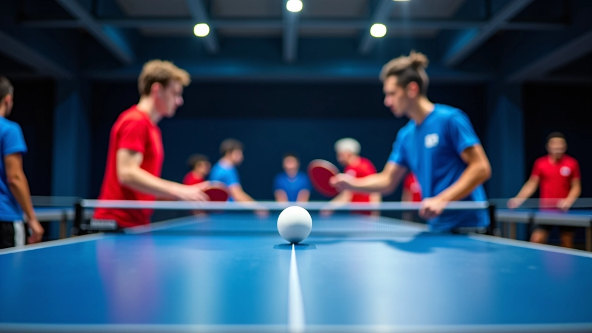
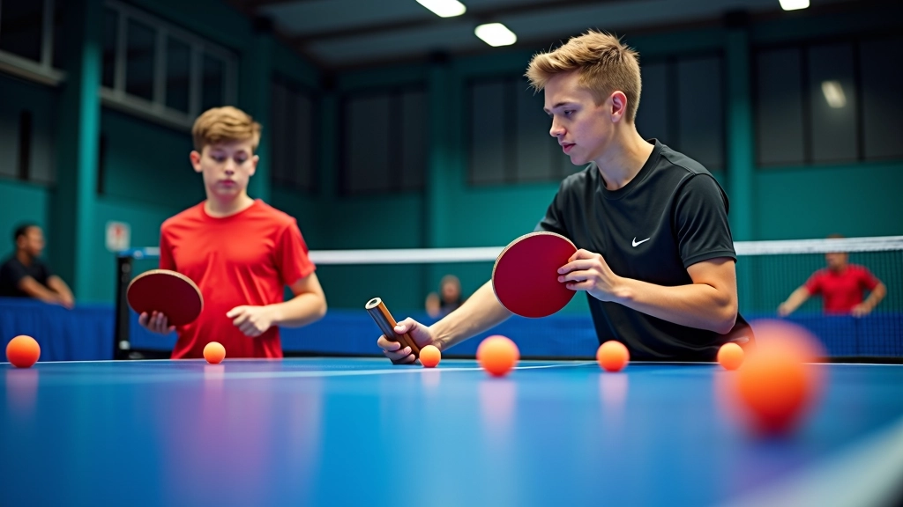
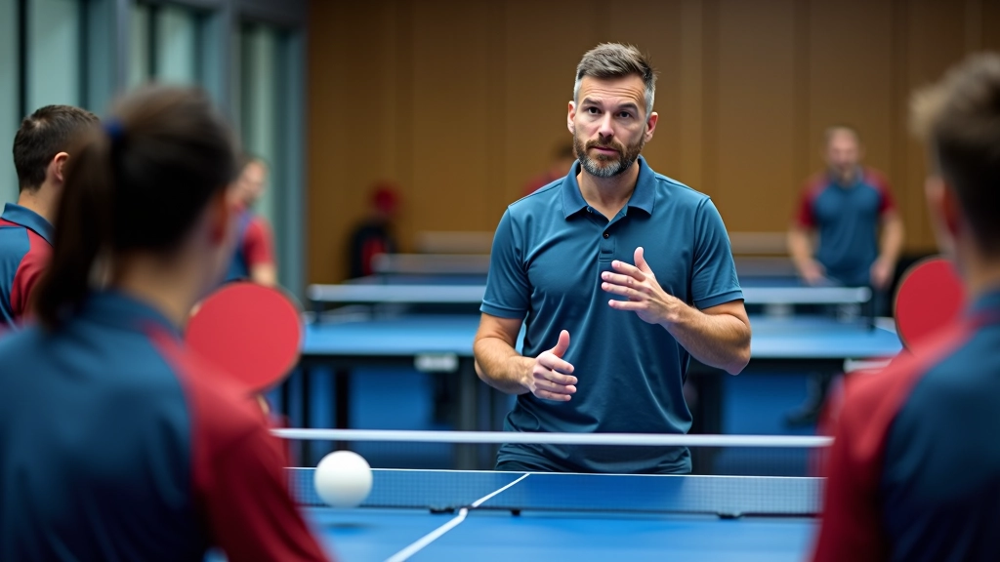
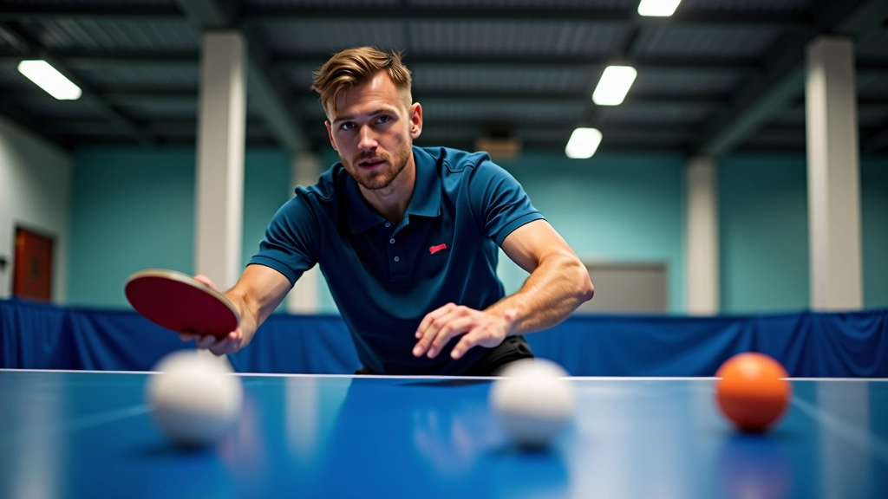
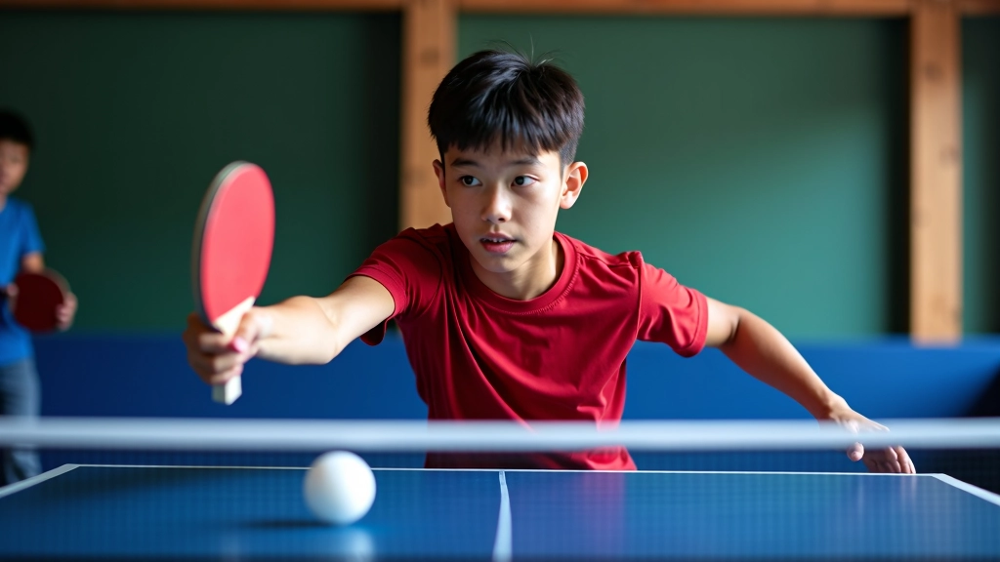

تقنيات الضربة الأمامية المتقدمة مع التغذية المتعددة
تعلم كيفية تحسين دقة ضربتك الأمامية باستخدام تمارين التغذية المتعددة بالكرات وال...
استراتيجيات فعالة لتنظيم جلسات تدريب جماعية باستخدام تمارين التغذية المتعددة وتطوير مهارات جميع اللاعبين في نفس الوقت


فريق التحرير والمحتوى
فريق درايف تايبل التحريري متخصص في تقديم تمارين عملية وسهلة التطبيق لتنس الطاولة
تدريب الفريق معاً يختلف تماماً عن التدريب الفردي. عندما يتدرب لاعبان أو أكثر على تمارين التغذية المتعددة، يحصلون على فوائد تتجاوز مجرد تحسين المهارات. هناك ديناميكية تنافسية صحية، وتعاون حقيقي، وفرصة لكل لاعب أن يتعلم من الآخرين.
البرامج الجماعية توفر بيئة تدريبية فعالة من حيث التكلفة والوقت. بدلاً من حجز مدرب واحد لكل لاعب، يمكن لمجموعة من 4-6 لاعبين العمل معاً تحت إشراف مدرب واحد. النتائج؟ تقدم أسرع وتحفيز أفضل وروح فريق قوية.

أول خطوة في أي برنامج تدريب جماعي هي تقسيم اللاعبين بحسب المستوى. لا تخلط لاعباً مبتدئاً مع لاعب متقدم في نفس التمرين. الفرق واضح جداً. لاعب البداية سيشعر بالإحباط، والمتقدم سيشعر بالملل.
التقسيم الفعال يبدو هكذا:
هذا التقسيم يضمن أن كل لاعب يحصل على التحدي المناسب لمستواه. بعد شهرين من التدريب المنتظم (3 جلسات أسبوعياً، 90 دقيقة لكل جلسة)، يمكنك إعادة تقييم وترقية لاعب من مجموعة لأخرى إذا أظهر تقدماً واضحاً.

المعلومات الواردة في هذا المقال هي لأغراض تعليمية وإعلامية فقط. البرامج التدريبية تختلف باختلاف احتياجات كل فريق وظروفهم. نوصي باستشارة مدرب متخصص قبل بدء أي برنامج تدريب جديد للتأكد من ملاءمته لمستوى لاعبيك وأهدافك التدريبية.

جلسة تدريب فعالة تستغرق 90 دقيقة بالمتوسط. الهيكل يجب أن يكون منظماً وسهل التنفيذ:
تمارين خفيفة، تمدد، تحضير الجسم. لا تتجاهل هذه الخطوة.
التركيز الأساسي. المدرب يغذي الكرات، اللاعبون يمارسون الحركات.
تطبيق ما تم تعلمه في موقف حقيقي ضد منافس.
استرخاء، شرب ماء، تقييم سريع للأداء.
الآن يأتي الجزء العملي. ما هي التمارين التي تعمل بشكل فعال مع مجموعة؟
تمرين الضربة الأمامية المتسلسلة: المدرب يغذي 5 كرات متتالية للاعب على جانبه الأيمن. اللاعب يضرب كل كرة بنفس القوة والدقة. بعد 5 ضربات، لاعب آخر يأخذ دوره. التكرار: 3 مجموعات لكل لاعب. هذا التمرين يطور الاتساق والثقة.
تمرين السرعة والحركة: المدرب يغذي الكرات بسرعات مختلفة — بطيء، متوسط، سريع. اللاعب يتكيف مع كل سرعة. يجب أن يتحرك قدماه بسرعة، يضبط المسافة، ثم يضرب. هذا يحاكي اللعب الحقيقي.
في جلسة واحدة، مع 5 لاعبين و1 مدرب، كل لاعب يحصل على 15-20 دقيقة من التغذية المباشرة. بقية الوقت يقضيه ينتظر دوره أو يراقب اللاعبين الآخرين ويتعلم من أخطائهم.

اقرأ المزيد عن تمارين التغذية المتعددة وتطوير مهاراتك
تعلم كيفية تحسين دقة ضربتك الأمامية باستخدام تمارين التغذية المتعددة بالكرات وال...

دليل شامل لفهم كيفية استخدام تمارين التغذية المتعددة لتطوير ردود الأفعال والسرعة...
برنامج تدريبي متخصص يركز على تحسين السرعة والتوازن والحركة الجانبية باستخدام تما...
برنامج التدريب الجماعي باستخدام تمارين التغذية المتعددة يعطيك الكثير: لاعبون متطورون، فريق قوي، وبيئة تدريبية فعالة. البدء سهل. احصل على 4-5 لاعبين من نفس المستوى، خطط 90 دقيقة من التدريب، وركز على جودة التغذية والتعليمات.
المهم هو الاستمرار. التدريب المنتظم — 3 جلسات أسبوعياً على الأقل — هو ما يصنع الفرق. بعد 6 أسابيع، ستلاحظ تحسناً واضحاً في مستوى جميع لاعبيك. وهذا هو المقصود.
استكشف المزيد من الموارد والأدلة حول تمارين التغذية المتعددة
اكتشف جميع الأدلة